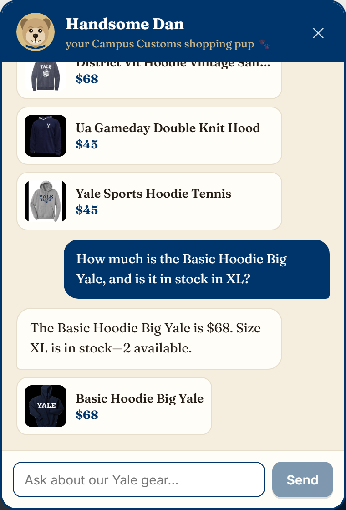
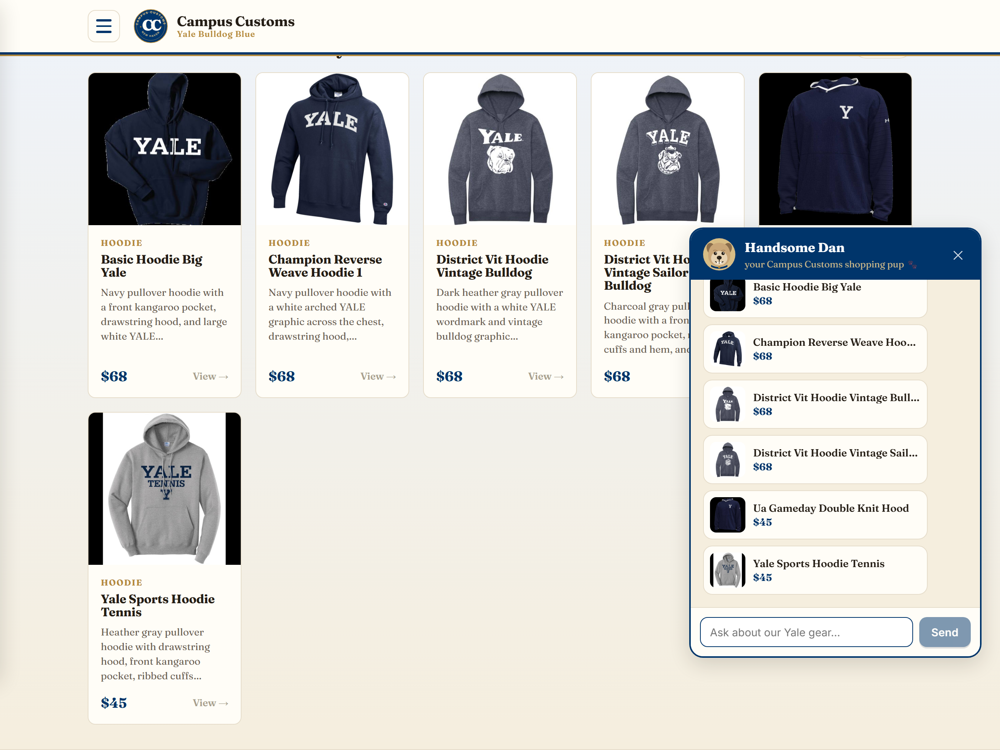
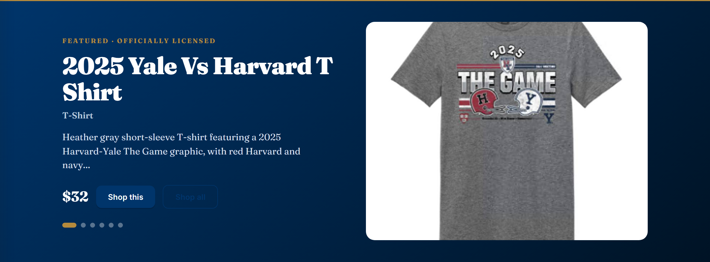

Campus Customs · Site Test
Three checks captured from the running site (frontend :5173 → FastAPI :8000 → agent → SQLite).

inventory table holds exactly 2 XL units of
this product at $68 — the numbers are looked up, not invented, and a sold-out size would be stated plainly.
